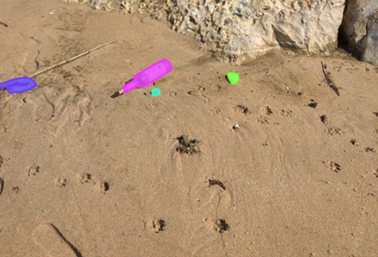
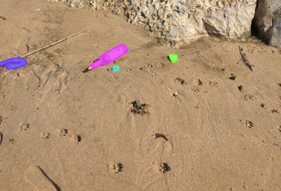
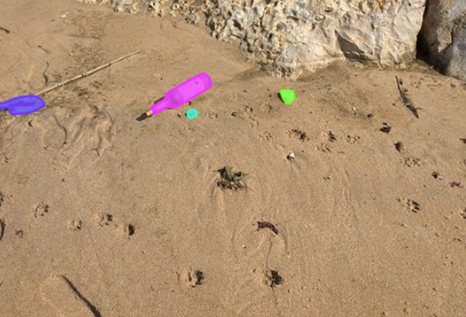

Utilize TACO dataset and model on a drone (Tensorflow) Show image and how it recognizes it: Spread out to whole beach:

The dataset and model are both being utilized from TACO (Trash Annotations in Context).
The dataset is a collection of images of trash on different backgrounds including sand,
gravel, and concrete which are then annotated with the trash detected in the image as
well as their positions. TACO additionally trained a mask R-CNN classification model
that is capable of taking any image and returning the location and type of trash.
We plan on using this model on data captured by our drone to classify all the types of
garbage on each section of the beach. Once this is done, we will be able to count every
individual piece of trash on any subsection of a beach to create a heatmap of where the
dirtiest beaches are in any region. The drone will act as a sliding window to collect
data and we will then process this into an array of trash quantities which will feed
our website visuals.